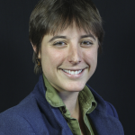
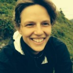
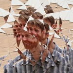
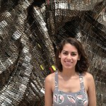

Overview
CTPL: Education aims to design a smarter learning future for Peru. Over the course of a three-day hands-on workshop, educators, thinkers, and technologists will work with MIT researchers to produce concepts and prototypes that can be implemented at scale to improve the quality of education and the experiences of educators and learners across the country. We define “education” broadly, imagining creative solutions for K-12, higher education, and informal learning alike.
The CTPL Mission:
- Develop innovative tools and content to address specific learning and education challenges
- Share skills and strategies that local participants can implement across their work
- Connect participants in similar domain to each other and to global networks of practitioners
- Lay the foundations for an educational technology community based in Lima, Peru
Objectives
Technology Transfer
Participants are introduced to a range of technology tools, management processes and strategies relevant to building successful projects in the creative industries.
Skill Building
Participants are provided hands-on, supervised experience in developing prototypes and implementation models, enabling them to push future projects on their own.
Prototyping New Products/Services/Models
Participants work through real world projects and ideas, and develop functional prototypes with their corresponding distribution and implementation strategy over the course of the lab.
Program
Day 1
INSPIRE: Participants hear lightning talks on innovative projects in the sector.
IDEATE: Teams begin to develop projects.
Day 2
IMPLEMENT: Teams continue to refine project concepts and build prototypes.
Day 3
ITERATE: Participants test their projects with potential users and make improvements.
SHARE: Teams present their projects at a public showcase.
Post-event
Participants will be invited to form a network of practitioners around educational technology to share further experiences, challenges and information, as well as to support each other in providing visibility for their projects. Facilitators and supporting partners will also remain available through this network for further questions and project support.
Join Us!
We are looking for people who are passionate about reimagining the future of education in Peru. Selected participants will be placed in interdisciplinary teams of four to five people and given three days to create, design and develop their concepts.
We are looking for a mix of:
- Educators: K-12 teachers, higher education faculty and staff, extracurricular teachers (e.g. sports or music), librarians, museum workers, and informal learning advocates
- Students: on-campus students, online students, and independent learners
- Technologists: programmers, builders, tinkerers, and instructors who create and use hardware and software
- Designers and artists: graphic and interaction designers, game developers, filmmakers, photographers, and visual artists
- Entrepreneurs: strategists, managers, and visionaries for digital products and educational initiatives
- Storytellers and communicators: journalists, writers, reporters, and researchers covering education, technology, and informal learning
APPLY HERE
Liam AndrewLiam Andrew researches cultural production and heritage on the web, and the distribution, classification and archiving of online media. His current research explores the intersection of news and cultural heritage, and the that ways journalists use digital archives to discover, create, and enrich news stories. Liam is also a software developer, formerly for social newsreader startup Wiser, and currently at MIT’s HyperStudio where he designs and develops tools that support research and teaching in the humanities, including an art event discovery mobile app and a multimedia annotation platform. Liam is a 2014 Google Journalism Fellow with Harvard’s Nieman Journalism Lab, reporting on digital innovation in newsrooms and building applications that support collaborative publishing and news discovery. Liam’s previous roles have included book editor, French-to-English translator, English teacher in France, music archivist in Uganda, and rock musician. He received a B.A. from Yale University with a degree in literature and music, and he is currently an M.S. candidate in the Comparative Media Studies program at MIT.

Chelsea BarabasChelsea researches how the landscape of higher education is evolving to meet the high demand for creative technologists in the U.S. workforce. She is particularly interested in understanding how informal learning experiences translate into meaningful career opportunities in the tech sector, where rapid industry growth has outpaced the supply of skilled technical and creative talent. Chelsea’s work has led her to engage with experimental education programs around the world that are designed to provide students who lack access to traditional degree programs with the opportunity to develop in-demand skills. Her research also examines how the competencies that students develop in these less formalized learning programs are validated and valued in the job market. Through this work, Chelsea hopes to provide a vision for how the ecosystem of higher education can be expanded to meet the needs of a diverse set of learners interested in working in the emerging innovation economy. Prior to coming to MIT, Chelsea worked and lived in East Africa, South America and the Middle East, where she developed co-learning workshops for highly diverse groups of people from around the world.

Heather CraigHeather Craig focuses her work on the intersections between interactive media and community engagement. She is currently a Research Assistant at MIT's Center for Civic Media, where she works on projects related to citizen data collection and interactive storytelling. Prior to MIT, Heather ran a non-profit media education organization, worked as a digital strategist at a design agency, and independently produced films and interactive media for conservation organizations, museums, and educational clients.
Suruchi DumpawarSuruchi is a designer, photographer, and a media researcher, currently pursuing a Masters in Comparative Media Studies from MIT. Her current research investigates the role of information & communication technologies during the Indian National elections in 2014. In particular, the ways in which new media technologies facilitate new political processes. Prior to MIT, she co-founded Lucida—a photographers’ collective, where she conceptualized and developed visual communication for cultural and educational organizations. Before that, she worked as a software consultant for Oracle SSI, where she developed, tested, and deployed interfaces and customizations across various modules of the Oracle e-business suite. As a researcher at MIT’s Mobile Experience Lab, Suruchi brings together her skills as a programmer and a designer to build applications that encourage new modes of interaction between people, information, and places. Suruchi received a B.Tech in Electronics & Communications Engineering from the National Institute of Technology, Nagpur and a Certificate in Photography Design from the National Institute of Design, Ahmedabad.

Sean Flynn
Sean Flynn is a documentary filmmaker and festival programmer. He is the Director of the Points North Documentary Forum at Camden International Film Festival and a research assistant at the MIT Open Documentary Lab, where he is pursuing a master's degree. In 2012, Sean was a Fulbright Senior Research Fellow in Mumbai, India, where he began developing a participatory documentary project. Sean began his filmmaking career at Boston-based Principle Pictures as Associate Producer and Co-Director of Photography on the feature documentary BEYOND BELIEF, which premiered at the 2007 Tribeca Film Festival and aired on Sundance Channel. As a cinematographer, Sean has worked in 15 countries – including conflict zones like Iraq, Afghanistan, Burma and the West Bank. As a producer, he has helped garner support for multiple film projects from many of the nation’s leading documentary funders, including ITVS, NEH, Cinereach, Fledgling Fund and the Tribeca Film Institute. Most recently, he was a producer on THE LIST, which premiered at the 2012 Tribeca Film Festival.

Desi Gonzalez
A researcher, writer, educator, and media maker, Desi Gonzalez studies the potential of digital media to encourage meaningful engagement with the arts. Her current research project investigates how change and innovation occur in cultural institutions, specifically focusing on an emerging wave of initiatives in art museums that invite visitors and artists to create with new technologies. At MIT's HyperStudio, she works on the design and evaluation of tools dedicated to supporting research and learning in the humanities, including an art discovery mobile app and a collaborative annotation platform. Before coming to MIT, Desi spent a year as a Kress Fellow at the Museum of Modern Art developing educational materials such as wall texts, audio tours, games, websites, and the interactive learning space MoMA Art Lab: Movement. Prior to that, she managed and wrote texts for the Whitney Museum of American Art's website for young artists, For Kids. She has written for various culture publications including Art in America, Art Papers, and IndieWire. Desi received a B.A. in art history and linguistics from Emory University.